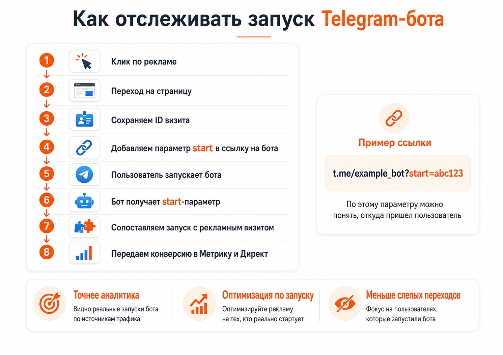
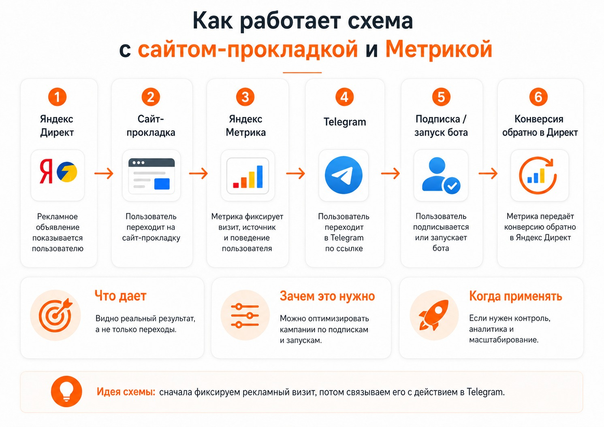

Блог о платном трафике
Реклама Telegram-канала в Яндекс Директе: как запустить и считать подписчиков
Рекламировать Telegram-канал через Яндекс Директ можно несколькими способами. Самый простой - использовать готовый Мастер кампаний и вести людей практически напрямую в канал. Более сложный вариант - поставить между рекламой и Telegram собственную страницу, связать ее с Яндекс Метрикой и передавать обратно реальные подписки или запуски бота.
Если нужно быстро проверить спрос и получить первые переходы, можно начать со стандартных инструментов Директа. Если реклама должна масштабироваться и работать на автоматических стратегиях, алгоритму полезнее дать информацию о настоящем результате: кто подписался на канал или запустил бота.
Можно ли рекламировать Telegram-канал через Яндекс Директ
Да. В Директе есть специальный Мастер кампаний «Подписчики в телеграм-канал». Яндекс анализирует канал, формирует объявления и может показывать их на поиске и в рекламных сетях. После клика человек сначала попадает на автоматически созданную промостраницу, а уже оттуда переходит в Telegram. Отдельный сайт делать необязательно.
Также можно размещать рекламу непосредственно внутри Telegram-каналов Рекламной сети Яндекса. При автоподборе площадок используется оплата за клики, а при выборе конкретных каналов из каталога - за просмотры рекламного поста.
| Вариант | Куда идет реклама | Что удобно считать | Сложность |
|---|---|---|---|
| Мастер кампаний | Поиск и сети → промостраница → Telegram | Клики, вовлеченные переходы, подписки | Низкая |
| Реклама в Telegram-каналах | Telegram-канал → ваш Telegram | Клики или просмотры, переходы | Низкая/средняя |
| Кампания через сайт | Поиск, РСЯ и другие места показа | Подписки, запуски бота и собственные цели | Высокая |
Подробнее об источниках трафика - в статье как работает Яндекс Директ.

Самый простой способ - Мастер кампаний
При создании кампании можно выбрать вариант «Подписчики в телеграм-канал» и указать ссылку на открытый канал. Директ использует публикации канала для создания объявлений, позволяет настроить регион, аудиторию, тематические слова, интересы и другие параметры. Показы могут идти как на поиске, так и в сетях.
Для небольшого теста этого часто достаточно: не нужно создавать лендинг, настраивать события на сайте и собирать отдельную систему аналитики.
Как Яндекс считает подписчиков
В канал можно добавить yandex_advert_bot с правами администратора. Он создает специальную пригласительную ссылку и помогает учитывать подписчиков, пришедших после рекламы. Другой вариант - создать отдельную пригласительную ссылку самостоятельно.
Увидеть, сколько человек подписалось, и обучать рекламную кампанию непосредственно на факте подписки - не одно и то же. В стандартном Мастере кампаний Яндекс оперирует прежде всего вовлеченным переходом, а статистика подписок доступна отдельно.
Реклама внутри Telegram-каналов через Директ
В Яндекс Директе можно покупать размещения непосредственно внутри других каналов Telegram. Объявление выглядит как пост с текстом, изображениями или видео. Яндекс либо автоматически подбирает подходящие каналы по тематике, описанию контента и географии, либо дает выбрать площадки из каталога.
Такой вариант ближе к привычным посевам в Telegram, только размещениями и статистикой управляет Яндекс Директ. Его имеет смысл тестировать отдельно от классической РСЯ: аудитория и точка контакта здесь другие.
Главная проблема прямой рекламы Telegram-канала
Если оценивать рекламу только по переходам, легко получить хорошую статистику в кабинете и слабый фактический результат. Одна кампания может приводить дешевые переходы, но люди почти не подписываются. Другая дает более дорогой переход, зато заметно больше посетителей остается в канале.
Для Telegram-канала конечной целью является подписка. Для Telegram-бота - запуск бота, регистрация, заявка или другое действие внутри воронки.
Продвинутая схема через сайт-прокладку и Яндекс Метрику
Более управляемая схема выглядит так: Яндекс Директ → сайт или техническая страница → Telegram → подписка или запуск бота → передача конверсии обратно в Яндекс.
Промежуточная страница нужна не ради дизайна. Ее задача - сохранить информацию о рекламном переходе до ухода пользователя в Telegram. На странице устанавливается Метрика, сохраняется идентификатор визита и затем конечное действие в Telegram передается обратно как конверсия. Яндекс позволяет загружать офлайн-конверсии и использовать их для оптимизации кампаний.
Проверить передачу цели помогает инструкция как проверить цель в Яндекс Метрике.

Как связать рекламный клик с запуском Telegram-бота
Telegram поддерживает deep link со специальным параметром start. Например: https://t.me/example_bot?start=abc123. После запуска бот получает этот параметр вместе с командой /start.
- Человек приходит из Яндекс Директа на промежуточную страницу.
- Система фиксирует рекламный визит.
- Для пользователя создается уникальный идентификатор.
- Идентификатор добавляется в ссылку на Telegram-бота.
- Пользователь запускает бота, а бот получает параметр
start. - Запуск сопоставляется с исходным рекламным визитом.
- Конверсия передается в Яндекс Метрику и Директ.
В результате кампания может обучаться не на человеке, который просто нажал кнопку «Перейти в Telegram», а на пользователях, которые действительно запустили бота.

start позволяет сопоставить запуск бота с рекламным визитом.Как считать подписки на Telegram-канал
Минимальный вариант - отдельные пригласительные ссылки Telegram. По ним можно видеть количество присоединившихся пользователей. Такой способ отвечает на вопрос: «Сколько подписчиков принесла эта реклама?»
Для полноценного машинного обучения необходимо связать конкретную подписку с рекламным визитом и вернуть информацию в Метрику как конверсию. Это требует специального сервиса аналитики либо собственной технической реализации.
Нужно ли делать полноценный лендинг
Нет. Если задача - корректно передать данные между Директом и Telegram, иногда достаточно короткой страницы с названием канала, несколькими тезисами, примерами публикаций и кнопкой перехода. Она дополнительно фильтрует аудиторию, но не должна превращаться в длинный коммерческий лендинг без необходимости.
Что использовать для Telegram-бота
Мастер кампаний «Подписчики в телеграм-канал» рассчитан на открытые каналы. Для продвижения бота логичнее строить отдельную рекламную воронку. Если нужно считать запуск, регистрацию или другое событие, используйте промежуточную систему аналитики и deep link с параметром start.
Что лучше: вести сразу в Telegram или через сайт
Для быстрого теста открытого канала можно запустить Мастер кампаний «Подписчики в телеграм-канал» и отдельно протестировать рекламу внутри Telegram-каналов через Директ. При постоянном рекламном бюджете полезнее ориентироваться на конечное действие и передавать офлайн-конверсии в Метрику.
Можно ли оптимизировать Яндекс Директ по подпискам в Telegram
Можно, если факт подписки корректно передается в Метрику как конверсия и связан с рекламным визитом. Одного yandex_advert_bot и стандартной кампании для такой схемы недостаточно.
Частые вопросы
Можно ли рекламировать Telegram-канал в Яндекс Директе без сайта?
Да. Для открытого канала есть отдельный Мастер кампаний. Яндекс сам создает промежуточную промостраницу.
Можно ли увидеть количество подписчиков из рекламы?
Да. Для этого используют бота Яндекса или отдельную пригласительную ссылку Telegram.
Можно ли рекламировать Telegram-бота через Яндекс Директ?
Да, но для бота нужна отдельная рекламная связка. Запуски можно учитывать через параметр start.
Можно ли настроить рекламу именно на подписки, а не на переходы?
Да, если связать подписку с рекламным визитом и передать ее обратно в систему аналитики как офлайн-конверсию.
Что лучше для Telegram-канала - Директ или Telegram Ads?
Это разные рекламные системы с разным инвентарем и логикой таргетинга. Директ дает дополнительные источники трафика из поиска, РСЯ и экосистемы Яндекса.
Вывод
Реклама Telegram-канала в Яндекс Директе может быть простой: достаточно создать Мастер кампаний и получать переходы в канал. Но переход в Telegram еще не равен подписке, а запуск бота важно отделять от обычного клика.
Для системной оптимизации рекламы нужна аналитика до конечного события: промежуточная страница, Яндекс Метрика и передача подписок или запусков бота обратно в рекламную систему. Тогда Директ получает данные о пользователях, ради которых реклама фактически запускается.
О настройке и аналитике кампаний - на странице услуг по Яндекс Директу.